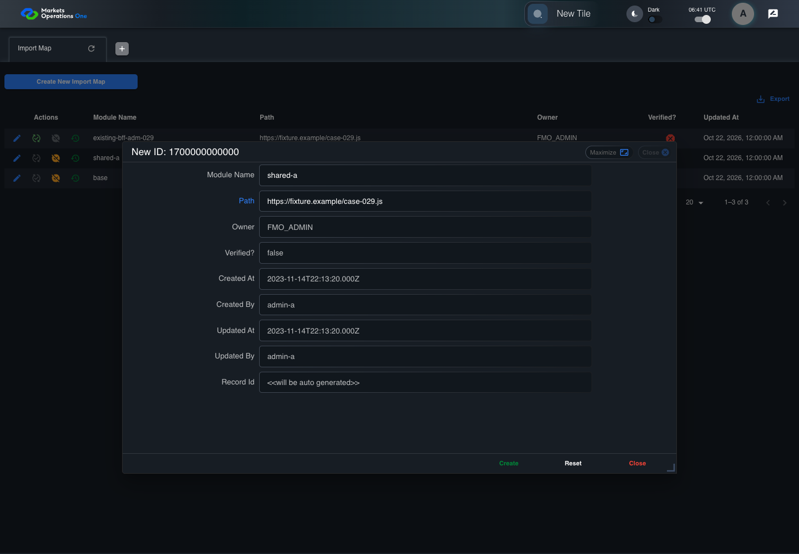

BFF-ADM-029 current BFF administration through actual UI
PASS · application/run-072/bff-adm-029-current-bff-administration-through-actual-ui-4f27d93dda2e-attempt-1 · ACTUAL_APPLICATION_LOCAL_SERVICES
Actual current React and exact-current BFF admin controllers/services/JPA with actual migration DDL in disposable PostgreSQL. Controlled OUD/EMS2 identities and local Spring bootstrap. Fixture SQL seeds/mutates isolated records; service errors are actual database errors. Undefined agreed messages remain unresolved acceptance.
2026-10-22T06:41:43.212Z to 2026-10-22T06:41:50.347Z
Assertions and result · Artifact manifest · Exact run inputs and source hashes
Result SHA-256:0ccb78548e9fee7f997a4169d1ccdd0c083833a9d758becebb6e9a0d74186613Machine observations
- actual-identity-projection.json
f4aee873d49bd938a4cf858ce147fbcdd74a05bc3e3cc7ee3f7ed19e5c47a3a2 - baseline-inputs.json
b42e989e70249c9ece0d047a65549a0f8cacc0ed0b28c41973d8762bdfc24c63 - bff-boundary.json
37d48e435b9eebd7a1d596bfd9fced59722ebdd2be69d5d32f1d714b1a75db64 - committed-ui-submission-comparisons.json
79058fa20c4f3d8afe7c27eb67901cac8021f631f03e87473a6011a824c61164 - creation-clock.json
be9e4db0d46ca6406b6a27a4adfcadf9c25b294c673cbb2b7b4377ff0a823064 - existing-duplicate-fixture.json
f2c93db23d44d5ce912bff1b2219da725ba80e281dc4b9a59ebe29357eadd2d1 - fixture-step-4.json
168956df5d21b910ef7fa151ee7f7628dd4a87b127adc1dac792157c76e764b2 - fixture-step-5.json
112b382d5718a23385ac3dbe8b0d9f49e9d6f71ea70bc181b9952436cd2fb46e - initial-persisted-records.json
de5129a59b75fd99a5fba127ef20565b2574da457c3952c138434c8bb5572f74 - persisted-after-submit.json
12bcd696d6a74e0106e14031ff23805c4420fe6a2c540992f97cf4a91b02c2d9 - ui-origin-bff-requests.json
af10cfdcbf138da3e67c677f89984a19d176cf0f7206af7c3de61104ab76c21b
Screenshot capture: CAPTURED. Named frames: 14.
Step screenshot bindings: COMPLETE. 13/13 canonical steps have execution screenshots.
Bindings measure structural coverage only. They do not establish screenshot content quality or relevance.
Screenshot content review: NOT_REVIEWED. Recorded context: 0/14 frames. Identical image bytes: 7 repeated frames. Recorded context does not establish human visual review.
Canonical step timeline
Given Admin A uses subject "admin-a" with role "FMO_ADMIN" in an isolated authenticated browser
Execution: PASSED.1. step-01 Visible state after step 1: Given Admin A uses subject "admin-a" with role "FMO_ADMIN" in an isolated authenticated browser
2026-10-22T06:41:45.877Z · 1440×1000
Step: /Users/lushevol/code/github/ratan-release-impact/workbench/tasks/ui-test-coverage-20261022/test-cases.md:15912
SHA-256:9c249314d28b0870af1b2450dbf2fe59d06ec29de77d58a2b2ad32c981bea824And the controlled Import Map fixture records the initial grid rows and persisted values
Execution: PASSED.
2. step-02 Visible state after step 2: And the controlled Import Map fixture records the initial grid rows and persisted values
2026-10-22T06:41:46.064Z · 1440×1000
Step: /Users/lushevol/code/github/ratan-release-impact/workbench/tasks/ui-test-coverage-20261022/test-cases.md:15913
SHA-256:9c249314d28b0870af1b2450dbf2fe59d06ec29de77d58a2b2ad32c981bea824Image bytes match frame 1. An unchanged image can be valid for consecutive assertions. This match does not establish correct step content.
And the controlled creation clock returns 1700000000000 milliseconds
Execution: PASSED.
3. step-03 Visible state after step 3: And the controlled creation clock returns 1700000000000 milliseconds
2026-10-22T06:41:46.147Z · 1440×1000
Step: /Users/lushevol/code/github/ratan-release-impact/workbench/tasks/ui-test-coverage-20261022/test-cases.md:15914
SHA-256:9c249314d28b0870af1b2450dbf2fe59d06ec29de77d58a2b2ad32c981bea824Image bytes match frame 2. An unchanged image can be valid for consecutive assertions. This match does not establish correct step content.
And the baseline fixture data defines "Module Name" as "container-029"
Execution: PASSED.
4. step-04 Visible state after step 4: And the baseline fixture data defines "Module Name" as "container-029"
2026-10-22T06:41:46.214Z · 1440×1000
Step: /Users/lushevol/code/github/ratan-release-impact/workbench/tasks/ui-test-coverage-20261022/test-cases.md:15915
SHA-256:9c249314d28b0870af1b2450dbf2fe59d06ec29de77d58a2b2ad32c981bea824Image bytes match frame 3. An unchanged image can be valid for consecutive assertions. This match does not establish correct step content.
And the baseline fixture data defines "Path" as "https://fixture.example/case-029.js"
Execution: PASSED.
5. step-05 Visible state after step 5: And the baseline fixture data defines "Path" as "https://fixture.example/case-029.js"
2026-10-22T06:41:46.301Z · 1440×1000
Step: /Users/lushevol/code/github/ratan-release-impact/workbench/tasks/ui-test-coverage-20261022/test-cases.md:15916
SHA-256:9c249314d28b0870af1b2450dbf2fe59d06ec29de77d58a2b2ad32c981bea824Image bytes match frame 4. An unchanged image can be valid for consecutive assertions. This match does not establish correct step content.
And an existing Import Map record already has "Module Name" equal to "shared-a"
Execution: PASSED.
6. step-06 Visible state after step 6: And an existing Import Map record already has "Module Name" equal to "shared-a"
2026-10-22T06:41:46.383Z · 1440×1000
Step: /Users/lushevol/code/github/ratan-release-impact/workbench/tasks/ui-test-coverage-20261022/test-cases.md:15917
SHA-256:9c249314d28b0870af1b2450dbf2fe59d06ec29de77d58a2b2ad32c981bea824Image bytes match frame 5. An unchanged image can be valid for consecutive assertions. This match does not establish correct step content.
When Admin A clicks the button labeled "Create New Import Map" on the Import Map administration page
Execution: PASSED.7. step-07 Visible state after step 7: When Admin A clicks the button labeled "Create New Import Map" on the Import Map administration page
2026-10-22T06:41:47.107Z · 1440×1000
Step: /Users/lushevol/code/github/ratan-release-impact/workbench/tasks/ui-test-coverage-20261022/test-cases.md:15918
SHA-256:11650bc4b27c25f901200fe0ba520c734cfc756e4f10ef6399f8da3fbe7a29a9Then the dialog titled "new ID: 1700000000000" is visible on the Import Map administration page
Execution: PASSED.8. step-08 Visible state after step 8: Then the dialog titled "new ID: 1700000000000" is visible on the Import Map administration page
2026-10-22T06:41:47.681Z · 1440×1000
Step: /Users/lushevol/code/github/ratan-release-impact/workbench/tasks/ui-test-coverage-20261022/test-cases.md:15919
SHA-256:c44135e367062c896f8b7f31fc77018befea9ee7b4b077898b2a19ce6385a903When Admin A fills the textbox labeled "Module Name" with "shared-a" in dialog "new ID: 1700000000000"
Execution: PASSED.9. step-09 Visible state after step 9: When Admin A fills the textbox labeled "Module Name" with "shared-a" in dialog "new ID: 1700000000000"
2026-10-22T06:41:48.286Z · 1440×1000
Step: /Users/lushevol/code/github/ratan-release-impact/workbench/tasks/ui-test-coverage-20261022/test-cases.md:15920
SHA-256:dca0d344cfbe8cb20c45b4b2eda6e6113c2d929deec546b9223666458ae934f6And Admin A fills the textbox labeled "Path" with "https://fixture.example/case-029.js" in dialog "new ID: 1700000000000"
Execution: PASSED.
10. step-10 Visible state after step 10: And Admin A fills the textbox labeled "Path" with "https://fixture.example/case-029.js" in dialog "new ID: 1700000000000"
2026-10-22T06:41:48.784Z · 1440×1000
Step: /Users/lushevol/code/github/ratan-release-impact/workbench/tasks/ui-test-coverage-20261022/test-cases.md:15921
SHA-256:622280b05dd03af90d8dfbffafb5eeea8b467f5437f022ea879d8cdd4c915446And Admin A clicks the button labeled "Create" in dialog "new ID: 1700000000000"
Execution: PASSED.11. step-11 Visible state after step 11: And Admin A clicks the button labeled "Create" in dialog "new ID: 1700000000000"
2026-10-22T06:41:49.133Z · 1440×1000
Step: /Users/lushevol/code/github/ratan-release-impact/workbench/tasks/ui-test-coverage-20261022/test-cases.md:15922
SHA-256:aa1c1254e4072875880dcc84b28e27feda0c5f1fe08c383721458ee9a2db41d8Then the alert with severity "error" in the portal snackbar contains the exact text "Record not created."
Execution: PASSED.12. step-12 Visible state after step 12: Then the alert with severity "error" in the portal snackbar contains the exact text "Record not created."
2026-10-22T06:41:49.226Z · 1440×1000
Step: /Users/lushevol/code/github/ratan-release-impact/workbench/tasks/ui-test-coverage-20261022/test-cases.md:15923
SHA-256:80bde37a60085795b98e197456a6520addeac19b3325728acce87561187f8039And the Import Map data grid with column "Record Id" contains exactly one existing row with value "shared-a" on the Import Map administration page
Execution: PASSED.
13. step-13 Visible state after step 13: And the Import Map data grid with column "Record Id" contains exactly one existing row with value "shared-a" on the Import Map administration page
2026-10-22T06:41:49.351Z · 1440×1000
Step: /Users/lushevol/code/github/ratan-release-impact/workbench/tasks/ui-test-coverage-20261022/test-cases.md:15924
SHA-256:80bde37a60085795b98e197456a6520addeac19b3325728acce87561187f8039Image bytes match frame 12. An unchanged image can be valid for consecutive assertions. This match does not establish correct step content.
Additional named frames

The final visible state after the named test assertions.
2026-10-22T06:41:49.507Z · 1440×1000Step: Test source: /Users/lushevol/code/github/ratan-release-impact/workbench/e2e/audit-specs/bff-admin.spec.ts:11
SHA-256:
80bde37a60085795b98e197456a6520addeac19b3325728acce87561187f8039Image bytes match frame 13. An unchanged image can be valid for consecutive assertions. This match does not establish correct step content.
Screenshots establish visible state only. Assertions and traces support functional claims.